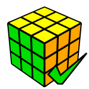
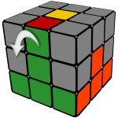
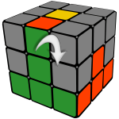
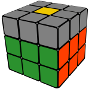
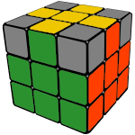

- EspComo resolver un cubo de Rubik
- PorComo resolver o Cubo Mágico
- FraComment résoudre le cube Rubik
- GerWie man einen Zauberwürfel löst
- ItaCome risolvere un cubo di Rubik
- HunA Rubik-kocka kirakása
- PolJak ułożyć Kostkę Rubika
- DutHoe los je een Rubik's Kubus op
- RomRezolvarea cubului Rubik
- SweHur man löser en Rubik's Kub
- ARBطريقة حل مكعب روبيك
- RusКак собрать Кубик Рубика
- Hinरूबिक्स क्यूब कैसे हल करें
- Benরুবিকস কিউব সলিউশন
- IndSolusi Kubus Rubik
- VieCách giải mã khối Rubik
- Chi如何解决魔方
- Kor큐브 맞추는 방법
- Japルービックキューブを対処方法
- TurRubik Küpü Nasıl Çözülür
How To Solve A Rubik's Cube 🤓
This is the easiest solution. You only have to learn a few moves:
 Analyze the 3x3 cube puzzle and learn the notation.
Analyze the 3x3 cube puzzle and learn the notation.  Solve the white face of the Rubik's Cube.
Solve the white face of the Rubik's Cube. Use a trick to fix the second layer.
Use a trick to fix the second layer. Fix the yellow edges.
Fix the yellow edges.- Position and orient the remaining corners.
Don't worry, this is not cheating. 99.9% can't solve the 3x3 cube puzzle (Rubik's Cube®) without help ;)
Scroll down to find out more!
- 如何解决魔方
- Como resolver un cubo de Rubik
- Como resolver o Cubo Mágico
- طريقة حل مكعب روبيك
- Comment résoudre le cube Rubik
- Как собрать Кубик Рубика
- रूबिक्स क्यूब कैसे हल करें
- রুবিক কিউব সহজে সমাধান করার উপায়
- ルービックキューブを対処方法
- 큐브 맞추는 방법
- A Rubik-kocka kirakása
- Wie man einen Zauberwürfel löst
- Come risolvere un cubo di Rubik
- Jak ułożyć Kostkę Rubika
- Hoe los je een Rubik's Kubus op
- Hur man löser en Rubik's Kub
- Rezolvarea cubului Rubik
- Cách giải mã khối Rubik
- Solusi Kubus Rubik
- Rubik Küpü Nasıl Çözülür
The Easiest Method
We will learn this step by step:
1
Experiment
Play with your cube and get familiar with it. Try to solve the white face without reading this tutorial.
🔬2
Notation
Learn the letters which are used to mark the rotations of the faces to describe the algorithms.
🤞3
The Solution
We divide the Rubik's Cube into 7 layers and solve each group not messing up the solved pieces.
🔧4
Practice
Practice the moves, memorize the algorithms until you can solve the Rubik's Cube without help.
🏋Discover the Rubik's Cube
Spend some time playing with the puzzle to familiarize with it before you read this solution tutorial and see how far you can get without help. Most people can solve one face after spending some time with the cube.
A few things you might notice:

Fixed Center Pieces
Notice that no matter what kind of face rotation you do, the center pieces always stay in the same position. They determine the color of each face.

Edges And Corners
Besides the fixed center pieces the cube is composed of 8 corner pieces with 3 stickers and 12 edge pieces with two stickers.
Too Many Cases
There are so many possible configurations (over 43 quintillion) that it would be impossible to solve it by randomly turning the faces until it's all done.

The Strategy
It's hard not to break the solved pieces while fixing new ones. We need to divide the cube into layers and use algorithms in each step which don't break the finished parts.
Notation
The Letters In The Algorithms
We've marked the six faces of the cube with the initials of their names.
| F – Front | R – Right |
| U – Up | L – Left |
We are not going to use the D (down) and B (back) faces in this tutorial.
A letter by itself means a clockwise rotation of the face while a counterclockwise turn is marked with an apostrophe.
| U | Quarter clockwise turn on the Up face (90°). |
| F' | Front face counterclockwise turn. |
| R2 | Double rotation on the Right face. |
Click the buttons to see the animated rotations in action.
And now we're prepared to learn the solution!
How To Solve The White Face Of The Rubik's Cube
Solving the first face of the Rubik's Cube is relatively
easy because there are not too many solved pieces that you
can mess up.
Spend some time playing with the puzzle and try to do this without reading further this page.
- ✔Start with the white edges, then do the corners.
- ✔Make sure the side colors are matching the side center colors (image below).
- ✔Can you do this step by yourself without reading this help?
1. Solve the white edges
We start by solving the white edge pieces. Of course you can start with any other color but in this solution guide we're going to use the white so I would advise you to use the same.


We already know that the center pieces are fixed and they define the color of each face. This is why we have to solve the white edges according to the color of the center pieces as illustrated above.
Solving the white edges is intuitive and quite easy because at this stage there are no solved pieces that we can break. In most cases you can just simply rotate each piece where they are supposed to be.
Here are a few examples that require a few extra moves.
Press the Play button to animate the rotations.
Apply this short algorithm when the piece is in the right spot (FU edge), but it's oriented wrong.
U'R'UF'
Do this when you can't simply just turn the front edge to its spot because it would be oriented wrong.
F'U'RU
The algorithm to solve the white edge when it's oriented wrong in the middle layer.
U'RU
2. Solve the white corners
The white edges are solved and we have to fix the white corners to complete the first face.

This is another easy stage where you shouldn't memorize any algorithm just follow your instincts. If you have difficulties solving the white corners, here's an easy trick you can always apply, you just have to memorize a short algorithm and repeat it until the piece is solved:
R'D'RD
Bring the corner below the spot where it belongs (Front-Right-Down position highlighted with grey) and repeat the algorithm above until the white corner pops into its place oriented correctly. This algorithm sends the piece back and forth between the spots marked with dark, always changing the orientation.
Play the animation for an example where the sequence is
repeated five times. Watch the affected white corner going to the top
then back to the bottom in each step, changing its orientation.
The sixth would bring the cube back to its original position:
This trick always works but requires too many unnecessary steps. Here are the shortcuts:
FDF'
R'D2RDR'D'R
At the end of this step your cube should have a solid white face.
3. Second Layer (F2L)
Now that we've finished the white face, let's turn the cube upside down because we don't need to see the solved side anymore.
The solution of the Rubik's Cube could be done intuitively until this point but this is where most people get stuck. The reason for that is that you would have to foresee too many steps to complete the first two layers (F2L).
We have to learn two algorithms which are symmetric to each other. We call them Left and Right algorithms.
The Left algorithm sends the edge piece from the Front-Up position to the left side while the Right algorithm sends it to the right as marked with the arrows.
Left

U'L'ULUFU'F'
Right

URU'R'U'F'UF
Wrong orientation
When there's no edge piece to insert into the middle layer you will have to execute the algorithm twice to pop the piece out in the first step.
For example, when the edge is on its place but turned incorrectly:
URU'R'U'F'UF - U2 - URU'R'U'F'UF

At the end of this step your cube should have the middle layer solved and an intact white face at the bottom.
4. The Top Cross
In the fourth step we want to form a yellow cross on the top of the cube. Don't worry if the side colors don't match the side centers because we will send the pieces to their final positions in the next step.
We solve the yellow edges on the top of the Rubik's Cube in two steps:
First we orient them to form a yellow cross on the top, then we swap the pieces to match them with the side colors.
At this point you can have one of these patterns on the top of your cube. Use the algorithm below to jump to the next state until you reach the cross.
» »
» »
»
FRUR'U'F'
- Dot – we have to apply the formula three times when all top edges are oriented wrong and there are no yellow stickers around the yellow center. Make sure you reorient the cube in your hands after the first stage because the "L"-shape will be upside down.
- "L"-shape – You're two algorithms away from
the target. Make sure the yellow edges are located on the left and back
positions as illustrated.
(There's a shortcut which jumps from the "L"-shape to the cross in one step, reducing the solution time: F U R U' R' F'). - Line – Perform the algorithm once, holding the line horizontally and you're done.
- Cross – The cross is complete, you can go to the next level!
5. Swap Last Layer Edges
We have the cross on the top but the sides of the yellow edges don't match the side colors yet. We need to put them in their final destinations.
To sort this out we use an algorithm which swaps the Front-Up and the Left-Up adjacent edges marked with the arrow.
RUR'URU2R'U
In some cases two opposite pieces have to be swapped which needs to be done in two steps.
Perform the algorithm once, then rotate the cube to make sure you are changing the right pieces in the second round:
At the end of this step you should have an almost finished cube, where only the yellow corners are left to solve:

6. Position Last Layer Corners
We are very close to finish solving our Rubik's Cube.
At this point only the yellow corners remained unsolved which we are going to sort out in two steps.
First we have to relocate them and we'll orient them in the next and final step.
We use a trick to cycle the marked corners on the image, while the Front-Right-Up corner, marked with "OK" stays in place.

URU'L'UR'U'L
When you reach this point in the solution look for a corner piece which is in the right place. If you found one then reorient the cube in your hands so this specific piece is on the OK position and perform the formula. In some cases you have to execute it twice.
If there's no yellow corner on the right spot then do the algorithm to reorganize the corners and then look around again because there must be a good one this time.
An interesting fact is that in this step the number of pieces in the right spot can only be 0, 1 or 4.
7. Orient last layer corners
In the last step every piece is where it's supposed to be, but the yellow corners are oriented wrong.
To complete our cube we will use the same algorithm we used to solve the first layer corners but with a little trick:

R'D'RD
Start by holding the cube in your hand having a misaligned yellow corner in the highlighted Front-Right-Up spot (see image).
Repeat the R' D' R D algorithm until this piece comes to the correct position with the yellow sticker upwards.
Turning only the Up face, move another wrong yellow corner to the highlighted spot and repeat the R' D' R D algorithm until that yellow piece is oriented correctly.
Move other misaligned yellow corners to the marked spot one by one and do the formula until all corners are solved.
The puzzle might seem to be scrambled between the moves but don't worry because everything will come together when all yellow corners are oriented properly.
Watch the video or the animation below that demonstrates examples of how to use this move.
Summary
Here are all moves together to help you practice.
How to solve your Rubik's Cube
Notation
Front, Right, Up, Left
L – Left clockwise
F' – Front inverted
R2 – Double right (180°)
1,2. White Face
Cross, then corners.
3. Middle layer
Right: U R U' R' U' F' U F
Left: U' L' U L U F U' F'

4. Top Cross

F R U R' U' F'
5. Swap Top Edges

R U R' U R U2 R' U
6. Position Top Corners

U R U' L' U R' U' L
7. Orient Top Corners
Move the misaligned yellow corners one by one to the highlighted position rotating the top layer and do R' D' R D until the current piece is solved.
Rubik's Cube Solver

If this tutorial didn't help try the online solver!
Let the program calculate the solution in 20 steps.
Input the colors of the scrambled puzzle, hit the solve button and follow the instructions.
The Most Popular Rubik's Cube Portal

- Puzzle Simulators
- Scramblers
- Cube Timer
- Interesting Articles
- Reveiws and Tutorials
... and more.
Click the image to visit the site!